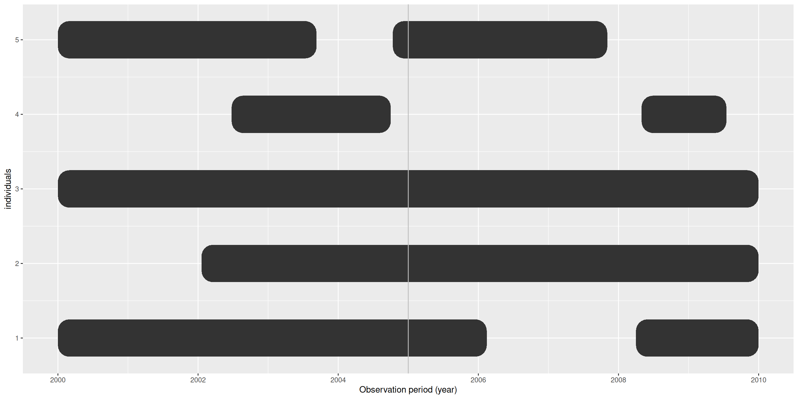
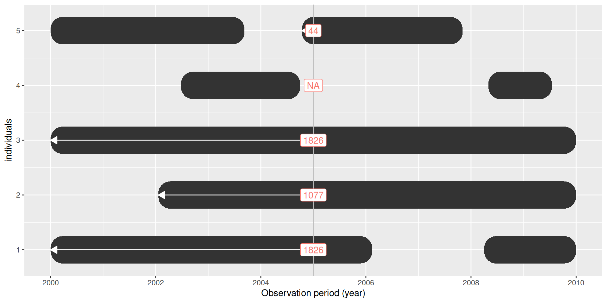
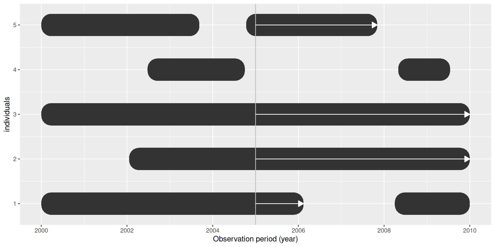
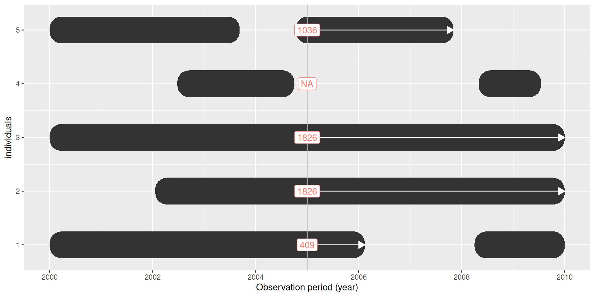
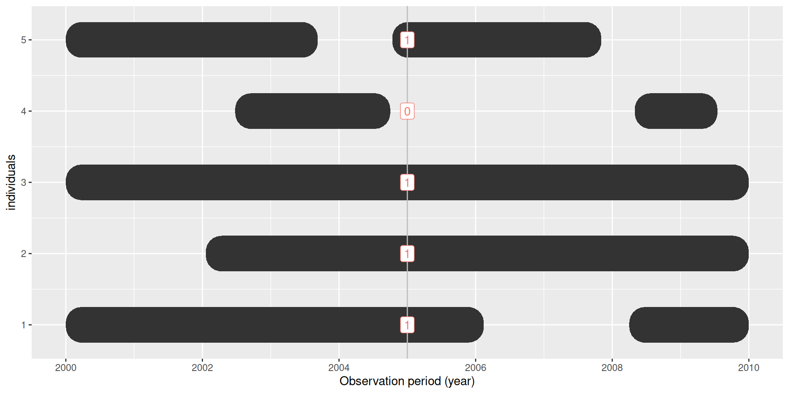

PatientProfiles
Adding patient-level characteristics to OMOP CDM tables
2026-06-25
What you will be able to do
Add patient-level characteristics to cohort and CDM tables.
Check whether records are inside observation and quantify lookback/follow-up time.
Create features from intersections with cohorts, concepts, and OMOP CDM tables.
Today’s workflow
Connect to a synthetic OMOP CDM database.
Create two small cohorts for live examples.
Add demographics and observation-period features.
Build intersection features.
Settings
PatientProfiles starts with a table that has a person identifier and, usually, an index date.
It returns the same table with extra columns.
Tip
For cohort tables, the default index date is cohort_start_date. For CDM clinical tables, set the relevant date column explicitly.
Setup
Load packages and create the CDM object
- Load the required packages
- Create a CDM object from the GiBleed synthetic dataset
cdm <- cdmFromCon(
con = con,
cdmSchema = "main",
writeSchema = "results",
writePrefix = "pp_"
)Create a cohort
Using CohortConstructor we will create:
-
my_cohort: people with arthritis-related records. -
medications: people with heparin records.
cdm$my_cohort <- conceptCohort(
cdm = cdm,
conceptSet = list(arthritis = c(80180, 80809)),
name = "my_cohort"
)
cdm$medications <- conceptCohort(
cdm = cdm,
conceptSet = list(heparin = 1367571),
name = "medications"
)Add demographics
addSex()
Use addSex() when the table contains person_id or subject_id and you want the person’s sex as a new column:
cdm$my_cohort |>
addSex(
sexName = "sex", # name of the new column (default = "sex")
missingSexValue = "None" # label for missing gender_concept_id (default = "None")
)# A query: ?? x 5
# Database: DuckDB 1.5.4 [unknown@Linux 6.17.0-1018-azure:R 4.6.1//home/runner/work/RealWorldEvidenceSummerSchool2026/RealWorldEvidenceSummerSchool2026/Databases/GiBleed.duckdb]
cohort_definition_id subject_id cohort_start_date cohort_end_date sex
<int> <int> <date> <date> <chr>
1 1 6 2005-07-13 2005-07-13 Female
2 1 123 1986-03-24 1986-03-24 Male
3 1 129 2014-03-21 2014-03-21 Male
4 1 16 2013-03-21 2013-03-21 Female
5 1 65 2009-06-03 2009-06-03 Female
6 1 74 2015-08-12 2015-08-12 Female
7 1 42 1950-05-16 1950-05-16 Female
8 1 187 1984-11-29 1984-11-29 Male
9 1 18 2009-03-21 2009-03-21 Female
10 1 111 2012-02-07 2012-02-07 Female
# ℹ more rowsaddAge()
Use addAge() to calculate age at an index date. The table must contain person_id or subject_id:
cdm$my_cohort |>
addAge(
indexDate = "cohort_start_date", # date to compute age (default = "cohort_start_date")
ageName = "age", # name of the age column (default = "age")
ageMissingMonth = 1, # Month for individuals with missing month (default = 1)
ageMissingDay = 1, # Day for individuals with missing day (default = 1)
ageImposeMonth = FALSE, # Whether to impose default month to all individuals (default = FALSE)
ageImposeDay = FALSE, # Whether to impose default day to all individuals (default = FALSE)
ageUnit = "years" # 'years', 'months' or 'days'.
)# A query: ?? x 5
# Database: DuckDB 1.5.4 [unknown@Linux 6.17.0-1018-azure:R 4.6.1//home/runner/work/RealWorldEvidenceSummerSchool2026/RealWorldEvidenceSummerSchool2026/Databases/GiBleed.duckdb]
cohort_definition_id subject_id cohort_start_date cohort_end_date age
<int> <int> <date> <date> <int>
1 1 84 2014-03-29 2014-03-29 40
2 1 406 1996-06-27 1996-06-27 44
3 1 1758 2002-09-28 2002-09-28 42
4 1 1820 2014-08-17 2014-08-17 36
5 1 2309 2016-10-10 2016-10-10 43
6 1 4247 2018-03-30 2018-03-30 35
7 1 4643 1944-06-22 1944-06-22 35
8 1 4662 1994-06-10 1994-06-10 43
9 1 648 1971-07-25 1971-07-25 38
10 1 1148 2001-07-01 2001-07-01 44
# ℹ more rowsaddAge()
Add age groups
# A query: ?? x 4
# Database: DuckDB 1.5.4 [unknown@Linux 6.17.0-1018-azure:R 4.6.1//home/runner/work/RealWorldEvidenceSummerSchool2026/RealWorldEvidenceSummerSchool2026/Databases/GiBleed.duckdb]
person_id drug_exposure_start_date age age_group
<int> <date> <int> <chr>
1 573 1960-04-09 0 0 to 39
2 1332 2010-10-06 67 40 or above
3 576 2017-10-25 51 40 or above
4 4550 2000-11-13 38 0 to 39
5 3895 1982-03-30 58 40 or above
6 3199 1975-08-19 2 0 to 39
7 476 2008-05-31 40 40 or above
8 1154 1971-05-16 0 0 to 39
9 186 1976-05-31 4 0 to 39
10 871 1967-11-09 1 0 to 39
# ℹ more rowsaddAge()
You can create several labelled age-group columns in one call:
# A query: ?? x 5
# Database: DuckDB 1.5.4 [unknown@Linux 6.17.0-1018-azure:R 4.6.1//home/runner/work/RealWorldEvidenceSummerSchool2026/RealWorldEvidenceSummerSchool2026/Databases/GiBleed.duckdb]
person_id drug_exposure_start_date age age_group category
<int> <date> <int> <chr> <chr>
1 573 1960-04-09 0 <40 kids
2 1332 2010-10-06 67 >=40 adults
3 576 2017-10-25 51 >=40 adults
4 4550 2000-11-13 38 <40 adults
5 3895 1982-03-30 58 >=40 adults
6 3199 1975-08-19 2 <40 kids
7 476 2008-05-31 40 >=40 adults
8 1154 1971-05-16 0 <40 kids
9 186 1976-05-31 4 <40 kids
10 871 1967-11-09 1 <40 kids
# ℹ more rowsaddPriorObservation()
How much lookback time did each person have before the index date?

addPriorObservation()
addPriorObservation()

addPriorObservation()
The default output is the number of days from observation start to index date:
cdm$my_cohort |>
addPriorObservation()# A query: ?? x 5
# Database: DuckDB 1.5.4 [unknown@Linux 6.17.0-1018-azure:R 4.6.1//home/runner/work/RealWorldEvidenceSummerSchool2026/RealWorldEvidenceSummerSchool2026/Databases/GiBleed.duckdb]
cohort_definition_id subject_id cohort_start_date cohort_end_date prior_observation
<int> <int> <date> <date> <int>
1 1 84 2014-03-29 2014-03-29 14625
2 1 406 1996-06-27 1996-06-27 16199
3 1 1758 2002-09-28 2002-09-28 15380
4 1 1820 2014-08-17 2014-08-17 13340
5 1 2309 2016-10-10 2016-10-10 15900
6 1 4247 2018-03-30 2018-03-30 12795
7 1 4643 1944-06-22 1944-06-22 12850
8 1 4662 1994-06-10 1994-06-10 16015
9 1 648 1971-07-25 1971-07-25 14100
10 1 1148 2001-07-01 2001-07-01 16080
# ℹ more rowsaddPriorObservation()
You can return the observation-period start date instead of a duration:
cdm$condition_occurrence |>
addPriorObservation(
indexDate = "condition_start_date",
priorObservationName = "start_observation", # name of the column
priorObservationType = "date" # default = "days"
) |>
select("person_id", "condition_occurrence_id", "condition_concept_id", "condition_start_date", "start_observation")# A query: ?? x 5
# Database: DuckDB 1.5.4 [unknown@Linux 6.17.0-1018-azure:R 4.6.1//home/runner/work/RealWorldEvidenceSummerSchool2026/RealWorldEvidenceSummerSchool2026/Databases/GiBleed.duckdb]
person_id condition_occurrence_id condition_concept_id condition_start_date start_observation
<int> <int> <int> <date> <date>
1 263 4483 4112343 2015-10-02 1954-06-20
2 273 4657 192671 2011-10-10 1975-09-14
3 283 4815 28060 1984-02-15 1980-09-01
4 293 4981 378001 2005-11-07 1964-10-13
5 304 5153 257012 1974-07-30 1956-05-07
6 312 5313 4134304 1991-05-14 1972-01-24
7 326 5513 28060 1979-09-23 1970-06-01
8 334 5655 40481087 1999-07-12 1935-06-06
9 341 5811 40481087 1990-09-14 1960-07-11
10 351 5977 40481087 1986-02-24 1977-11-29
# ℹ more rowsaddFutureObservation()
How much follow-up time did each person have after the index date? . . .

addFutureObservation()

addFutureObservation()

addFutureObservation()
cdm$my_cohort |>
addFutureObservation()# A query: ?? x 5
# Database: DuckDB 1.5.4 [unknown@Linux 6.17.0-1018-azure:R 4.6.1//home/runner/work/RealWorldEvidenceSummerSchool2026/RealWorldEvidenceSummerSchool2026/Databases/GiBleed.duckdb]
cohort_definition_id subject_id cohort_start_date cohort_end_date future_observation
<int> <int> <date> <date> <int>
1 1 84 2014-03-29 2014-03-29 1461
2 1 406 1996-06-27 1996-06-27 8322
3 1 1758 2002-09-28 2002-09-28 6005
4 1 1820 2014-08-17 2014-08-17 1649
5 1 2309 2016-10-10 2016-10-10 928
6 1 4247 2018-03-30 2018-03-30 363
7 1 4643 1944-06-22 1944-06-22 19644
8 1 4662 1994-06-10 1994-06-10 8926
9 1 648 1971-07-25 1971-07-25 17414
10 1 1148 2001-07-01 2001-07-01 6334
# ℹ more rowsaddInObservation()
Is each index date inside an observation period?

addInObservation()
addInObservation()

addInObservation()
cdm$condition_occurrence |>
addInObservation(indexDate = "condition_start_date") |>
filter(in_observation == 1) |>
select("condition_concept_id", "person_id", "condition_start_date", "in_observation")# A query: ?? x 4
# Database: DuckDB 1.5.4 [unknown@Linux 6.17.0-1018-azure:R 4.6.1//home/runner/work/RealWorldEvidenceSummerSchool2026/RealWorldEvidenceSummerSchool2026/Databases/GiBleed.duckdb]
condition_concept_id person_id condition_start_date in_observation
<int> <int> <date> <int>
1 4112343 263 2015-10-02 1
2 192671 273 2011-10-10 1
3 28060 283 1984-02-15 1
4 378001 293 2005-11-07 1
5 257012 304 1974-07-30 1
6 4134304 312 1991-05-14 1
7 28060 326 1979-09-23 1
8 40481087 334 1999-07-12 1
9 40481087 341 1990-09-14 1
10 40481087 351 1986-02-24 1
# ℹ more rowsaddDateOfBirth()
Use addDateOfBirth() to add subjects’ date of birth.
cdm$my_cohort |>
addDateOfBirth()# A query: ?? x 5
# Database: DuckDB 1.5.4 [unknown@Linux 6.17.0-1018-azure:R 4.6.1//home/runner/work/RealWorldEvidenceSummerSchool2026/RealWorldEvidenceSummerSchool2026/Databases/GiBleed.duckdb]
cohort_definition_id subject_id cohort_start_date cohort_end_date date_of_birth
<int> <int> <date> <date> <date>
1 1 84 2014-03-29 2014-03-29 1974-03-14
2 1 406 1996-06-27 1996-06-27 1952-02-19
3 1 1758 2002-09-28 2002-09-28 1960-08-19
4 1 1820 2014-08-17 2014-08-17 1978-02-07
5 1 2309 2016-10-10 2016-10-10 1973-03-30
6 1 4247 2018-03-30 2018-03-30 1983-03-19
7 1 4643 1944-06-22 1944-06-22 1909-04-17
8 1 4662 1994-06-10 1994-06-10 1950-08-05
9 1 648 1971-07-25 1971-07-25 1932-12-16
10 1 1148 2001-07-01 2001-07-01 1957-06-22
# ℹ more rowsaddBirthday()
Use addBirthday() to add specific birthdays of individuals, accounting for leap years and correcting the invalid dates to the next valid date
cdm$my_cohort |>
addDateOfBirth() |>
addBirthday(
birthday = 5, # default is 0
birthdayName = "5th_birthday"
)# A query: ?? x 6
# Database: DuckDB 1.5.4 [unknown@Linux 6.17.0-1018-azure:R 4.6.1//home/runner/work/RealWorldEvidenceSummerSchool2026/RealWorldEvidenceSummerSchool2026/Databases/GiBleed.duckdb]
cohort_definition_id subject_id cohort_start_date cohort_end_date date_of_birth `5th_birthday`
<int> <int> <date> <date> <date> <date>
1 1 84 2014-03-29 2014-03-29 1974-03-14 1979-03-14
2 1 406 1996-06-27 1996-06-27 1952-02-19 1957-02-19
3 1 1758 2002-09-28 2002-09-28 1960-08-19 1965-08-19
4 1 1820 2014-08-17 2014-08-17 1978-02-07 1983-02-07
5 1 2309 2016-10-10 2016-10-10 1973-03-30 1978-03-30
6 1 4247 2018-03-30 2018-03-30 1983-03-19 1988-03-19
7 1 4643 1944-06-22 1944-06-22 1909-04-17 1914-04-17
8 1 4662 1994-06-10 1994-06-10 1950-08-05 1955-08-05
9 1 648 1971-07-25 1971-07-25 1932-12-16 1937-12-16
10 1 1148 2001-07-01 2001-07-01 1957-06-22 1962-06-22
# ℹ more rowsaddDemographics()
addDemographics() is a convenience wrapper for common patient-level features.
cdm$my_cohort |>
addDemographics()# A query: ?? x 8
# Database: DuckDB 1.5.4 [unknown@Linux 6.17.0-1018-azure:R 4.6.1//home/runner/work/RealWorldEvidenceSummerSchool2026/RealWorldEvidenceSummerSchool2026/Databases/GiBleed.duckdb]
cohort_definition_id subject_id cohort_start_date cohort_end_date age sex prior_observation
<int> <int> <date> <date> <int> <chr> <int>
1 1 6 2005-07-13 2005-07-13 41 Female 15170
2 1 123 1986-03-24 1986-03-24 35 Male 13130
3 1 129 2014-03-21 2014-03-21 39 Male 14410
4 1 16 2013-03-21 2013-03-21 41 Female 15134
5 1 65 2009-06-03 2009-06-03 42 Female 15405
6 1 74 2015-08-12 2015-08-12 43 Female 15925
7 1 42 1950-05-16 1950-05-16 40 Female 14804
8 1 187 1984-11-29 1984-11-29 39 Male 14374
9 1 18 2009-03-21 2009-03-21 43 Female 15830
10 1 111 2012-02-07 2012-02-07 36 Female 13430
# ℹ more rows
# ℹ 1 more variable: future_observation <int>addDemographics()
cdm$my_cohort |>
addDemographics(
age = TRUE,
ageGroup = list("kids" = c(0, 17), "adults" = c(18, Inf)),
sex = FALSE,
priorObservation = TRUE,
priorObservationName = "observation_start",
priorObservationType = "date",
futureObservation = TRUE,
futureObservationName = "observation_end",
futureObservationType = "date"
)# A query: ?? x 8
# Database: DuckDB 1.5.4 [unknown@Linux 6.17.0-1018-azure:R 4.6.1//home/runner/work/RealWorldEvidenceSummerSchool2026/RealWorldEvidenceSummerSchool2026/Databases/GiBleed.duckdb]
cohort_definition_id subject_id cohort_start_date cohort_end_date age age_group observation_start
<int> <int> <date> <date> <int> <chr> <date>
1 1 84 2014-03-29 2014-03-29 40 adults 1974-03-14
2 1 406 1996-06-27 1996-06-27 44 adults 1952-02-20
3 1 1758 2002-09-28 2002-09-28 42 adults 1960-08-19
4 1 1820 2014-08-17 2014-08-17 36 adults 1978-02-07
5 1 2309 2016-10-10 2016-10-10 43 adults 1973-03-30
6 1 4247 2018-03-30 2018-03-30 35 adults 1983-03-19
7 1 4643 1944-06-22 1944-06-22 35 adults 1909-04-17
8 1 4662 1994-06-10 1994-06-10 43 adults 1950-08-05
9 1 648 1971-07-25 1971-07-25 38 adults 1932-12-16
10 1 1148 2001-07-01 2001-07-01 44 adults 1957-06-22
# ℹ more rows
# ℹ 1 more variable: observation_end <date>Your Turn
Starting from cdm$my_cohort, create a table with:
- sex
- age groups
<18,18-64, and65+ - prior observation in days
- future observation in days
Your Turn
cdm$my_cohort |>
addDemographics(
age = FALSE,
ageGroup = list(
"<18" = c(0, 17),
"18-64" = c(18, 64),
"65+" = c(65, Inf)
),
priorObservation = TRUE,
priorObservationType = "days",
futureObservation = TRUE,
futureObservationType = "days"
) # A query: ?? x 8
# Database: DuckDB 1.5.4 [unknown@Linux 6.17.0-1018-azure:R 4.6.1//home/runner/work/RealWorldEvidenceSummerSchool2026/RealWorldEvidenceSummerSchool2026/Databases/GiBleed.duckdb]
cohort_definition_id subject_id cohort_start_date cohort_end_date age_group sex prior_observation
<int> <int> <date> <date> <chr> <chr> <int>
1 1 6 2005-07-13 2005-07-13 18-64 Female 15170
2 1 123 1986-03-24 1986-03-24 18-64 Male 13130
3 1 129 2014-03-21 2014-03-21 18-64 Male 14410
4 1 16 2013-03-21 2013-03-21 18-64 Female 15134
5 1 65 2009-06-03 2009-06-03 18-64 Female 15405
6 1 74 2015-08-12 2015-08-12 18-64 Female 15925
7 1 42 1950-05-16 1950-05-16 18-64 Female 14804
8 1 187 1984-11-29 1984-11-29 18-64 Male 14374
9 1 18 2009-03-21 2009-03-21 18-64 Female 15830
10 1 111 2012-02-07 2012-02-07 18-64 Female 13430
# ℹ more rows
# ℹ 1 more variable: future_observation <int>Choosing a characteristic helper
| Need | Helper |
|---|---|
| Sex | addSex() |
| Age or age groups | addAge() |
| Lookback time | addPriorObservation() |
| Follow-up time | addFutureObservation() |
| Date inside observation | addInObservation() |
| Common demographics together | addDemographics() |
Add intersections
The intersection functions
- Did the person have an event?
- How many events did they have?
- When was the first or last event?
- How many days until or since the event?
15 functions
How to choose
| Source of target records | Flag |
|---|---|
| Cohort table | addCohortIntersectFlag() |
| Concept set | addConceptIntersectFlag() |
| OMOP table | addTableIntersectFlag() |
| Source of target records | Count |
|---|---|
| Cohort table | addCohortIntersectCount() |
| Concept set | addConceptIntersectCount() |
| OMOP table | addTableIntersectCount() |
How to choose
| Source of target records | Date |
|---|---|
| Cohort table | addCohortIntersectDate() |
| Concept set | addConceptIntersectDate() |
| OMOP table | addTableIntersectDate() |
| Source of target records | Days |
|---|---|
| Cohort table | addCohortIntersectDays() |
| Concept set | addConceptIntersectDays() |
| OMOP table | addTableIntersectDays() |
How to choose
| Source of target records | Field |
|---|---|
| Cohort table | addCohortIntersectField() |
| Concept set | addConceptIntersectField() |
| OMOP table | addTableIntersectField() |
addCohortIntersectFlag
Did the person enter another cohort in the next 180 days or 181-365 days?
cdm$my_cohort |>
addCohortIntersectFlag(
targetCohortTable = "medications",
window = list(c(1, 180), c(181, 365))
) |> glimpse()Rows: ??
Columns: 6
$ cohort_definition_id <int> 1, 1, 1, 1, 1, 1, 1, 1, 1, 1, 1, 1, 1, 1, 1, 1, 1, 1, 1, 1, 1, 1, 1, 1, 1, 1, 1…
$ subject_id <int> 84, 406, 1758, 1820, 2309, 4247, 4643, 4662, 648, 1148, 1464, 2116, 2509, 3064,…
$ cohort_start_date <date> 2014-03-29, 1996-06-27, 2002-09-28, 2014-08-17, 2016-10-10, 2018-03-30, 1944-0…
$ cohort_end_date <date> 2014-03-29, 1996-06-27, 2002-09-28, 2014-08-17, 2016-10-10, 2018-03-30, 1944-0…
$ heparin_1_to_180 <dbl> 0, 0, 0, 0, 0, 0, 0, 0, 0, 0, 0, 0, 0, 0, 0, 0, 0, 0, 0, 0, 0, 0, 0, 0, 0, 0, 0…
$ heparin_181_to_365 <dbl> 0, 0, 0, 0, 0, 0, 0, 0, 0, 0, 0, 0, 0, 0, 0, 0, 0, 0, 0, 0, 0, 0, 0, 0, 0, 0, 0…addTableIntersectCount
How many drug exposure records did the person have in the year after cohort entry?
cdm$my_cohort |>
addTableIntersectCount(
tableName = "drug_exposure",
window = c(0, 365),
nameStyle = "number_prescriptions",
name = "my_cohort2" #Name of the new table, if NULL a temporary table is returned.
)# A query: ?? x 5
# Database: DuckDB 1.5.4 [unknown@Linux 6.17.0-1018-azure:R 4.6.1//home/runner/work/RealWorldEvidenceSummerSchool2026/RealWorldEvidenceSummerSchool2026/Databases/GiBleed.duckdb]
cohort_definition_id subject_id cohort_start_date cohort_end_date number_prescriptions
<int> <int> <date> <date> <dbl>
1 1 84 2014-03-29 2014-03-29 1
2 1 406 1996-06-27 1996-06-27 1
3 1 1758 2002-09-28 2002-09-28 1
4 1 1820 2014-08-17 2014-08-17 2
5 1 2309 2016-10-10 2016-10-10 1
6 1 4247 2018-03-30 2018-03-30 1
7 1 4643 1944-06-22 1944-06-22 1
8 1 4662 1994-06-10 1994-06-10 1
9 1 648 1971-07-25 1971-07-25 1
10 1 1148 2001-07-01 2001-07-01 2
# ℹ more rowsaddCohortIntersectDate
When did the person first enter the medication cohort after cohort entry?
cdm$my_cohort |>
addCohortIntersectDate(
targetCohortTable = "medications",
targetCohortId = "heparin",
window = c(0, Inf),
order = "first", # date to use if there are multiple records for an individual during the window of interest
nameStyle = "first_{cohort_name}"
)# A query: ?? x 5
# Database: DuckDB 1.5.4 [unknown@Linux 6.17.0-1018-azure:R 4.6.1//home/runner/work/RealWorldEvidenceSummerSchool2026/RealWorldEvidenceSummerSchool2026/Databases/GiBleed.duckdb]
cohort_definition_id subject_id cohort_start_date cohort_end_date first_heparin
<int> <int> <date> <date> <date>
1 1 84 2014-03-29 2014-03-29 NA
2 1 406 1996-06-27 1996-06-27 NA
3 1 1758 2002-09-28 2002-09-28 NA
4 1 1820 2014-08-17 2014-08-17 NA
5 1 2309 2016-10-10 2016-10-10 NA
6 1 4247 2018-03-30 2018-03-30 NA
7 1 4643 1944-06-22 1944-06-22 NA
8 1 4662 1994-06-10 1994-06-10 NA
9 1 648 1971-07-25 1971-07-25 NA
10 1 1148 2001-07-01 2001-07-01 NA
# ℹ more rowsaddConceptIntersectDays
How many days until the next record for a concept set?
cdm$my_cohort |>
addConceptIntersectDays(
conceptSet = list(tramadol = 1103314),
window = c(0, 365),
inObservation = FALSE, # If TRUE only records inside an observation period will be considered.
nameStyle = "next_{concept_name}"
) |>
glimpse()Rows: ??
Columns: 5
$ cohort_definition_id <int> 1, 1, 1, 1, 1, 1, 1, 1, 1, 1, 1, 1, 1, 1, 1, 1, 1, 1, 1, 1, 1, 1, 1, 1, 1, 1, 1…
$ subject_id <int> 84, 406, 1758, 1820, 2309, 4247, 4643, 4662, 648, 1148, 1464, 2116, 2509, 3064,…
$ cohort_start_date <date> 2014-03-29, 1996-06-27, 2002-09-28, 2014-08-17, 2016-10-10, 2018-03-30, 1944-0…
$ cohort_end_date <date> 2014-03-29, 1996-06-27, 2002-09-28, 2014-08-17, 2016-10-10, 2018-03-30, 1944-0…
$ next_tramadol <dbl> NA, NA, NA, NA, NA, NA, NA, NA, NA, NA, NA, NA, NA, NA, NA, NA, NA, NA, NA, NA,…addConceptIntersectField
What is the last value of body weight recorded before index day?
cdm$my_cohort |>
addConceptIntersectField(
conceptSet = list(body_weight = 3012888),
field = "value_as_number",
window = c(-Inf, 0),
order = "last",
nameStyle = "body_weight_value"
) |>
glimpse()Rows: ??
Columns: 5
$ cohort_definition_id <int> 1, 1, 1, 1, 1, 1, 1, 1, 1, 1, 1, 1, 1, 1, 1, 1, 1, 1, 1, 1, 1, 1, 1, 1, 1, 1, 1…
$ subject_id <int> 84, 406, 1758, 1820, 2309, 4247, 4643, 4662, 648, 1148, 1464, 2116, 2509, 3064,…
$ cohort_start_date <date> 2014-03-29, 1996-06-27, 2002-09-28, 2014-08-17, 2016-10-10, 2018-03-30, 1944-0…
$ cohort_end_date <date> 2014-03-29, 1996-06-27, 2002-09-28, 2014-08-17, 2016-10-10, 2018-03-30, 1944-0…
$ body_weight_value <chr> NA, NA, NA, NA, NA, NA, NA, NA, NA, NA, NA, NA, NA, NA, NA, NA, NA, NA, NA, NA,…Your Turn
- Did the person have an heparin cohort entry in the year before index?
- How many condition occurrence records did they have in the year before index?
Your Turn
cdm$my_cohort |>
addCohortIntersectFlag(
targetCohortTable = "medications",
targetCohortId = "heparin",
window = list("prior_year" = c(-365, -1)),
nameStyle = "prior_{cohort_name}"
)
cdm$my_cohort |>
addTableIntersectCount(
tableName = "condition_occurrence",
window = c(-365, -1),
nameStyle = "prior_conditions"
)# A query: ?? x 6
# Database: DuckDB 1.5.4 [unknown@Linux 6.17.0-1018-azure:R 4.6.1//home/runner/work/RealWorldEvidenceSummerSchool2026/RealWorldEvidenceSummerSchool2026/Databases/GiBleed.duckdb]
cohort_definition_id subject_id cohort_start_date cohort_end_date prior_heparin prior_conditions
<int> <int> <date> <date> <dbl> <dbl>
1 1 84 2014-03-29 2014-03-29 0 2
2 1 406 1996-06-27 1996-06-27 0 1
3 1 648 1971-07-25 1971-07-25 0 1
4 1 1464 2002-08-13 2002-08-13 0 1
5 1 2116 1990-10-04 1990-10-04 0 1
6 1 2509 2006-05-20 2006-05-20 0 2
7 1 3064 1975-05-16 1975-05-16 0 2
8 1 4760 1995-03-06 1995-03-06 0 1
9 1 135 2009-11-27 2009-11-27 0 1
10 1 967 1973-10-25 1973-10-25 0 1
# ℹ more rowsMore intersection functions in PatientProfiles
Thank you!
Resources
👉 Package website
👉 CRAN
👉 PDF manual
📧 cecilia.campanile@ndorms.ox.ac.uk